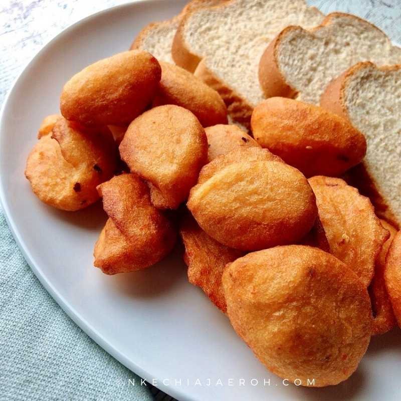

Akara recipe

Description
Akara is a popular Nigerian delicacy made with beans mainly black-eyed beans.
Ingredients
- 2 cups dry black eye beans or peas
- 4 large onions
- Vegetable oil (for deep frying)
- 3 bell peppers
- Ground red pepper
- 5 chilli peppers
How to
- Wash and deskin beans.
- Blend with onions, bell pepper and chilli peppers into a thick paste(paste shouldn't be runny).
- Mix paste with salt and pepper to taste.
- Heat a generous amount of oil for deep frying.
- Pour the paste into the oil carefully and fry gently until turns brown
- Turn over as needed.
- Wait for it too cool and serve.